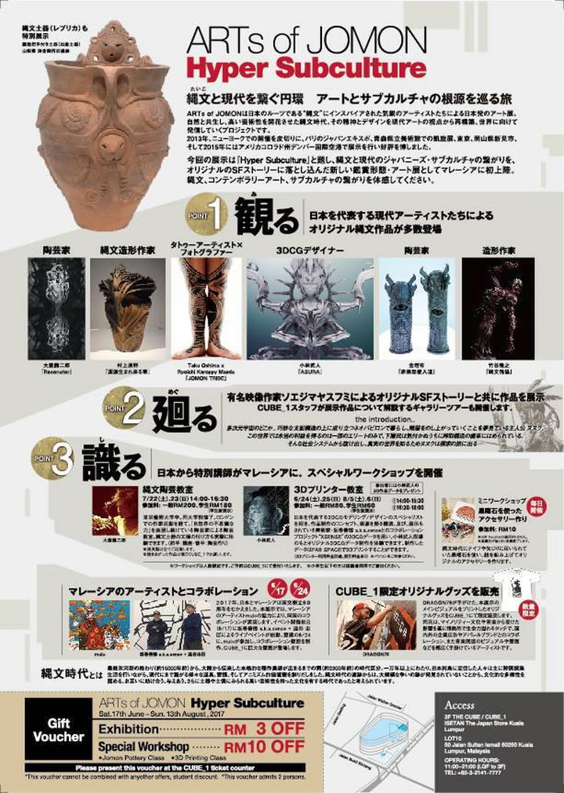

― これまでのイベント（記録） ―

|
|  |
| 【ARTs of JOMON クアラルンプール チラシ】 |
2013年3月にNYで初開催、パリのジャパンエキスポ、青森県立美術館、東京・表参道スパイラルガーデン、
岡山県新見市、2015年８月にはデンバー国際空港で開催されてきたARTs of JOMONがマレーシア、
クアラルンプールに初上陸。日本の文化を発信するISETAN Lot10、CUBE_1において開催されます。
今回は『Hyper Subculture』と銘打ち、縄文とジャパニーズ・サブカルチャ、コンテンポラリー・アートの
繋がりをオリジナルSFストーリーとして展開する新たな試みです。
【参加アーティスト】（順不同、敬称略）
村上原野（縄文作家）、結城幸司（美術家）、大藪龍二郎（陶芸家）、大森準平（陶芸家）、
坂巻善徳 a.k.a. sense（美術家）、小林武人（ポスト・デジタルアーティスト）、
片桐仁（コメディアン、造形家）、篠崎由美子（陶芸家）、金理有（陶芸家）、
大島托（彫師）＆ケロッピー前田（写真家）、松山賢（美術家）、堀江武史（修復家、アーティスト）、
竹谷隆之(造形家）、澁谷忠臣（イラストレーター/ペインター）、Dragon76（イラストレーター/ペインター）、
ソエジマヤスフミ（映像作家）、高橋昂也（映像作家）、田乃上 顕治(造形家)、安藤北斗＆林登志也（we+）、
杉山孝博（ジュエリー作家）、mulo（イラストレーター/ペインター）、arttech（イラストレーター/ペインター）、
伊良原満美（漆アーティスト）、丸岡和吾（髑髏作家）
→ ARTs of JOMON 公式アカウント(Facebook)